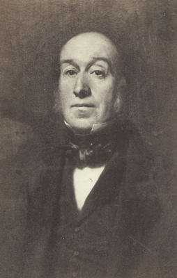

Een hoogoven is een installatie waarin ijzererts en koolstof worden gesmolten en gemengd, daarbij worden ze zo sterk verhit dat via een aantal chemische reacties ijzer smelt ontstaat waarin een zeker percentage koolstof is opgelost, dat vervolgens kan worden afgetapt. De koolstof dient tegelijkertijd als brandstof voor de verhitting en als reductiemiddel van het ijzererts.
Geschiedenis
Voor het tijdperk van de hoogovens werd voor het produceren van ijzer gebruikgemaakt van laagovens. Hierin vond dezelfde reactie plaats, maar was het ontstane ijzer niet zo heet dat het vloeibaar werd, het lag als een gesinterde massa in de slak en moest door verhitten en hameren verder worden bewerkt en gezuiverd. In China bestonden hoogovens vanaf ongeveer de 5e eeuw v.Chr., in het Westen vanaf de Hoge Middeleeuwen. In het westen verspreidde de hoogoven zich vanuit de regio rond de Waalse, aan de Maas gelegen stad Luik. In 1491, aan het eind van de 15e eeuw werd de hoogoven in Engeland geïntroduceerd. De brandstof die in hoogovens werd gebruikt, was steevast houtskool.

 De succesvolle, door uitputting van de beschikbare hoeveelheid houtskool gedreven vervanging van houtskool door cokes wordt toegeschreven aan Abraham Darby. Deze revolutionaire innovatie dateert van 1709. De efficiëntie van het proces werd verder versterkt door de praktijk om de ingeblazen lucht voor te verwarmen. De Schot James Beaumont Neilsons nam hier in 1828 patent op. De hoogoven onderscheidt zich hierin van de laagoven, dat het doel van de hoogoven het produceren van gesmolten metaal is, dat kan worden afgetapt uit de oven, terwijl het de bedoeling van de laagoven juist is om smelten te voorkomen, zodat de koolstof niet in het ijzer opgelost wordt. Laagovens werden ook kunstmatig aangeblazen met behulp van blaasbalgen, maar de term hoogoven wordt normaal gesproken gereserveerd voor ovens, waar ijzer (of een ander metaal) uit erts wordt geraffineerd. Een hoogoven maakt gebruik van het tegenstrooms-uitwisselingproces, dit in tegenstelling tot een laagoven.
Werking
Bovenaan de hoogoven worden afzonderlijke lagen cokes (2,5) en lagen sinter, ijzeroxidepellets & stukerts (1,6) geladen. Een alternatief is om sinter te laden, een gesinterd, sterk en poreus materiaal van ijzererts, cokes, kalk en vloeimiddel. Beneden, aan de blaasmonden, wordt hete lucht (7, ongeveer 1200 °C, voorverwarmd in warmtewisselaars 13) en poederkool (16) ingeblazen, eventueel verrijkt met zuurstof. De zuurstof uit de lucht verbrandt de koolstof uit de cokes en poederkool onder vorming van koolstofmonoxide (CO). Het CO-gas, dat een temperatuur van ongeveer 2200-2400 °C heeft, stijgt op door de lagen cokes en erts. De ijzeroxiden in de sinter, pellets en stukertsen reduceren onder deze omstandigheden tot ijzer, en smelten tot ijzersmelt. Dit smelt van ruwijzer sijpelt nu door de cokeslagen naar beneden en verzamelt zich onder in de hoogoven (de zogenaamde haard van de hoogoven).
 Wanneer er zich voldoende ruwijzersmelt heeft verzameld in de haard, wordt de hoogoven onderaan opengeboord en
stroomt
het ruwijzersmelt (9) via het tapgat naar buiten. Daar wordt het opgevangen in mengers (11). Dit zijn
treinwagens
met
een torpedovormig voorraadvat met vuurvaste binnenbekleding. Deze worden getransporteerd naar de staalfabriek
voor
verdere verwerking. Wanneer al het ruwijzer uit de hoogoven is afgetapt, wordt het tapgat weer dichtgemaakt.
Het
aftappen duurt ongeveer 90 minuten.
Sinter, pellets en stukertsen bevat naast ijzeroxides ook onzuiverheden waaronder calciumoxide (CaO) en
siliciumdioxide (SiO2). Deze materialen smelten ook en vormen de slak (8), die bovenop het ijzersmelt blijft
drijven.
De slak wordt ook afgetapt (10) en verwerkt in o.a. de cementindustrie.
Wanneer er zich voldoende ruwijzersmelt heeft verzameld in de haard, wordt de hoogoven onderaan opengeboord en
stroomt
het ruwijzersmelt (9) via het tapgat naar buiten. Daar wordt het opgevangen in mengers (11). Dit zijn
treinwagens
met
een torpedovormig voorraadvat met vuurvaste binnenbekleding. Deze worden getransporteerd naar de staalfabriek
voor
verdere verwerking. Wanneer al het ruwijzer uit de hoogoven is afgetapt, wordt het tapgat weer dichtgemaakt.
Het
aftappen duurt ongeveer 90 minuten.
Sinter, pellets en stukertsen bevat naast ijzeroxides ook onzuiverheden waaronder calciumoxide (CaO) en
siliciumdioxide (SiO2). Deze materialen smelten ook en vormen de slak (8), die bovenop het ijzersmelt blijft
drijven.
De slak wordt ook afgetapt (10) en verwerkt in o.a. de cementindustrie.
Moderne hoogovens produceren 8500 tot 13.500 ton ruwijzer per dag, rond 1860 lag dit nog rond de 25 ton. Aan het begin van de 20e eeuw hadden de hoogovens een binnendiameter van 4 à 5 meter en produceerden ze ongeveer 100.000 ton ruwijzer per jaar. Aan het einde van de 20e eeuw produceerden de grootste hoogovens zo’n 3 tot 4 miljoen ton staal per jaar en was de binnenmaat gegroeid tot 14 à 15 meter.
Sinds het midden van de jaren tachtig is de omvang van de hoogovens nauwelijks meer toegenomen. De productie is nog wel licht gestegen en de allergrootste hoogovens produceren tussen de 12.000 en 13.500 ton ruwijzer per dag. In de tabel is deze ontwikkeling weergegeven, maar een tijdsaanduiding ontbreekt in de bron. In Nederland staan er hoogovens in IJmuiden die onderdeel zijn van Tata Steel. In België zijn er te Gent van de groep ArcelorMittal, verder twee in Seraing en een in Charleroi.